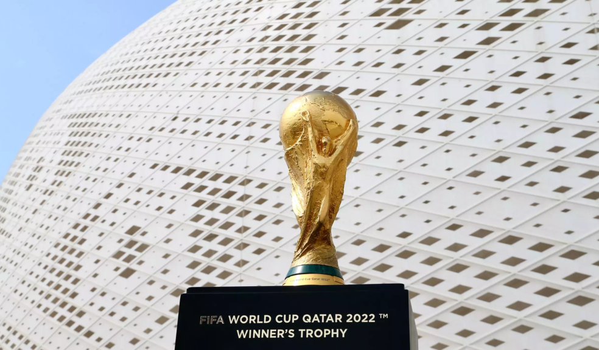

Copa do Mundo de 2022
A Copa do Mundo FIFA de 2022 já está chegando e sem dúvidas é o evento mais esperado no meio futebolístico e de seus adeptos, seja pelo espetáculo ou pelas polêmicas acerca do evento. Essa será a sua vigésima segunda edição e ocorrerá no Catar, Oriente Médio. O torneio internacional de futebol espera que ao longo dos seus 28 dias haja mais de um milhão de torcedores. O campeonato será disputado entre 21 de novembro e 18 de dezembro.

Seleções Participantes
A Copa do Mundo de 2022 já tem 29 de seus 32 participantes conhecidos. Confira na tabela abaixo como foram definidos os grupos na competição:
| Grupo A |
| Catar |
| Equador |
| Senegal |
| Holanda |
| Grupo B |
| Inglaterra |
| Irã |
| Estados Unidos |
| País de Gales/Escócia/Ucrânia |
| Grupo C |
| Argentina |
| Arábia Saudita |
| México |
| Polônia |
| Grupo D |
| França |
| Peru/Emirados Árabes/Austrália |
| Dinamarca |
| Tunísia |
| Grupo E |
| Espanha |
| Costa Rica/Nova Zelândia |
| Alemanha |
| Japão |
| Grupo F |
| Bélgica |
| Canadá |
| Marrocos |
| Croácia |
| Grupo G |
| Brasil |
| Sérvia |
| Suiça |
| Camarões |
| Grupo H |
| Portugal |
| Gana |
| Uruguai |
| Coreia do Sul |
Dois playoffs intercontinentais em junho decidirão as próximas duas vagas. O Peru enfrentará o vencedor dos Emirados Árabes Unidos contra a Austrália, enquanto a Costa Rica enfrentará a Nova Zelândia no outro playoff.
A vaga final será para o vencedor de uma partida entre País de Gales e Escócia ou Ucrânia, partida inicialmente marcada para 24 de março, mas adiada pela Fifa para junho após a invasão da Ucrânia pela Rússia.
Estádios
A Copa do Mundo de 2022 já está na cabeça da grande maioria dos torcedores e para receber sua primeira Copa do Mundo, o Catar preparou oito estádios para o Mundial de 2022. Serão arenas modernas e com tecnologia avançada.
- Estádio Internacional Khalifa
- Estádio Education City
- Estádio Al-Thumama
- Estádio Al-Janoub
- Estádio Nacional de Lusail (Estádio Iconic)
O único estádio da Copa do Mundo do Catar que não foi construído do zero, o Khalifa é a arena mais famosa do país e existe desde 1976, praticamente uma relíquia pelos padrões locais. Após uma grande reforma, o estádio reabriu em 2017 com capacidade para 40.000 torcedores e receberá jogos até a fase das quartas de final da Copa. Além da tecnologia avançada de refrigeração que mantêm jogadores e fãs na temperatura ideal, a modernidade do estádio também aparece na estrutura externa em forma de arco duplo. O Estádio Internacional Khalifa fica no coração da Aspire Zone de Doha, uma área de desenvolvimento tecnológico e inovação que servirá como ponto de encontro para os torcedores durante a Copa do Mundo de 2022.
O Estádio Education City é uma arena de 40.000 lugares que receberá partidas até a fase de quartas de final da Copa do Mundo de 2022 no Catar. Ele ganhou esse nome por estar no campus da principal universidade do Catar. Ainda inacabado, ele foi projetado na forma de um diamante irregular que vai se destacar na paisagem durante o dia e literalmente brilhar à noite. O estádio terá a capacidade reduzida pela metade após o torneio e mais de 20.000 assentos serão doados para a construção de estádios nos países em desenvolvimento. A apenas sete quilômetros do centro de Doha, o Estádio Education City terá fácil acesso para os torcedores que vierem de carro ou metrô. A área é repleta de espaços verdes, tem um campo de golfe e até um moderno shopping center.
A apenas 12 quilômetros do centro de Doha, o estádio Al-Thumama está em construção terá e 40.000 lugares. O belo design dessa arena é inspirado na gahfiya, a tradicional touca usada pelos homens árabes. Como vários estádios da Copa do Mundo de 2022, o Al-Thumama vai reduzir a capacidade pela metade após o torneio e doar mais de 20.000 lugares para promover o futebol e construir estádios nos países em desenvolvimento. Para chegar ao estádio, bastará pegar uma linha de metrô específica em Doha.
O estádio Al-Janoub é uma arena impressionante, com capacidade aproximada de 40.000 pessoas. Ele foi projetado pela falecida e renomada arquiteta Dame Zaha Hadid no estilo curvo que foi sua marca registrada. Esse elegante estádio do Catar foi inspirado nos cascos dos barcos de pesca de pérolas que atuavam na Península Arábica. Essa inspiração também aparece no uso de madeira e materiais tradicionais na construção da arena. O estádio Al-Janoub fica na cidade de Al-Wakrah. A apenas 20 quilômetros de Doha, os torcedores poderão chegar ao estádio Al-Wakrah usando uma linha de metrô específica.
O Estádio Nacional de Lusail vai receber o jogo de abertura e a final da Copa do Mundo de 2022. A arena terá capacidade aproximada de 80.000 pessoas e foi projetada pelos arquitetos britânicos Foster + Partners. Com estrutura inspirada nas antigas técnicas artesanais árabes de tecelagem de cestos, o estádio tem tudo para proporcionar uma abertura e encerramento inesquecíveis para o torneio. A arena fica em Lusail, uma cidade planejada situada ao norte de Doha, que está sendo construída especialmente para o evento. Quando a Copa do Mundo chegar, Lusail terá uma ampla variedade de atrações, incluindo marinas, resorts, lojas de grife, instalações de lazer e muito mais. Apenas 15 quilômetros ao norte do centro de Doha, o Estádio Nacional de Lusail será servido por uma conexão direta de metrô da capital, facilitando o acesso dos torcedores.
Saiba sobre os outros estádios Aqui